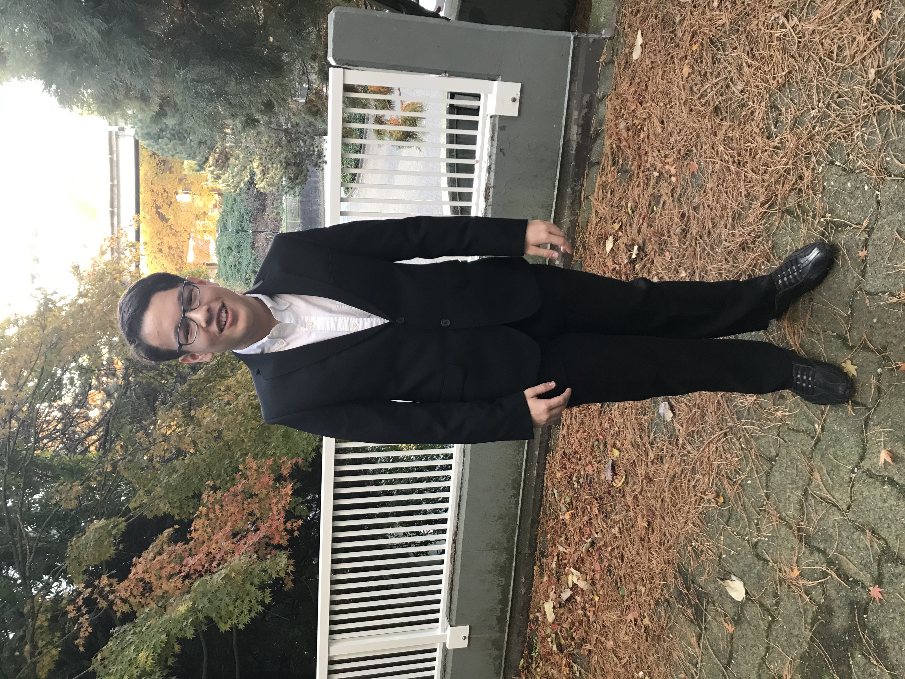

I am 16 and my favorite animal is the penguin, specifically the chinstrap penguin. I am in grade 10 and interesed in space. My electives in school for this year are Computer Studies and french. In grade 11 I plan on taking Accounting, Chesmistry, Programming, and French as electives.
In Computer Studies I have learned Gamemaker and starting to learn HTML. I learned Gamemaker which is move advanced version of scratch basically, I made a total of 6 games. I am starting to learn HTML with no prior knowledge, except for it you start something you need to end it. I chose this cource because making games and websites is interesting.
Website Link: Youtube.com.
This is a photo of me in a suit befoe going to sketch at the Splash Art Gala.
---->
